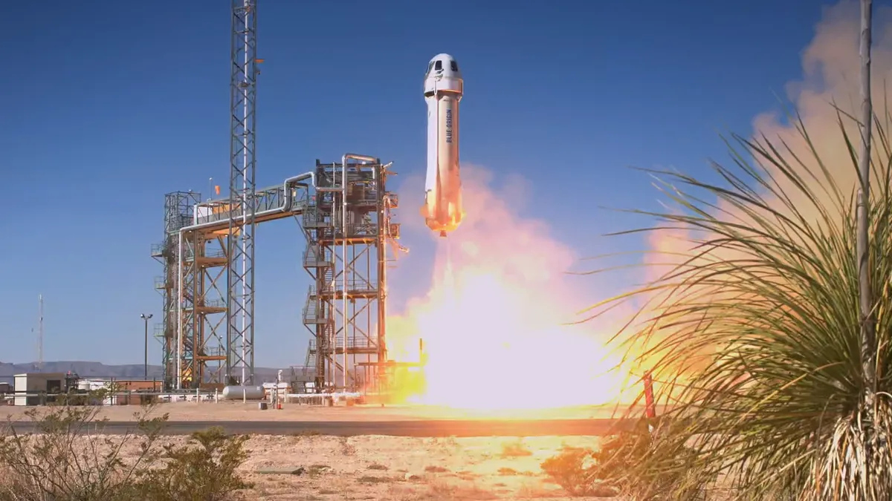
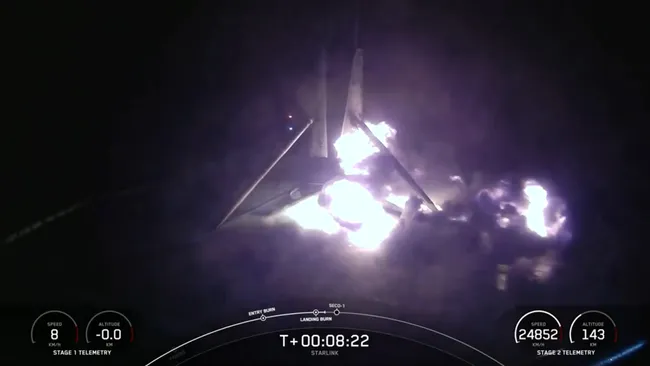
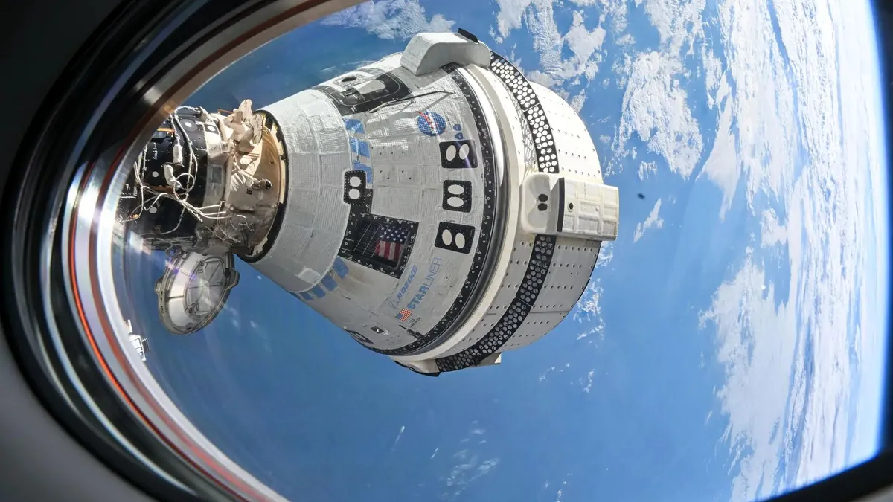
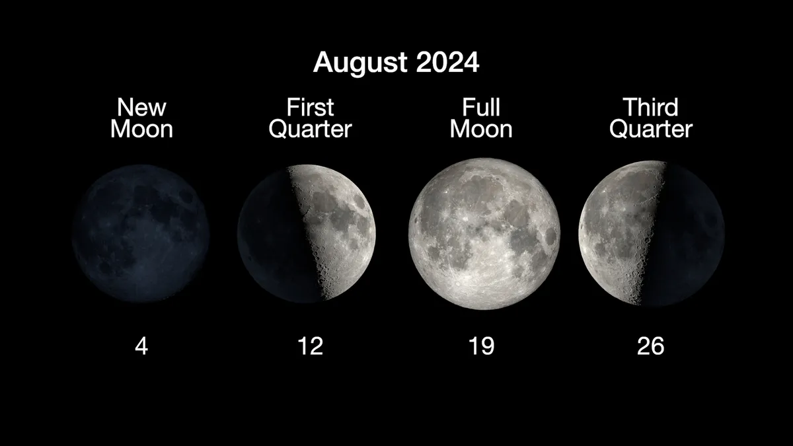
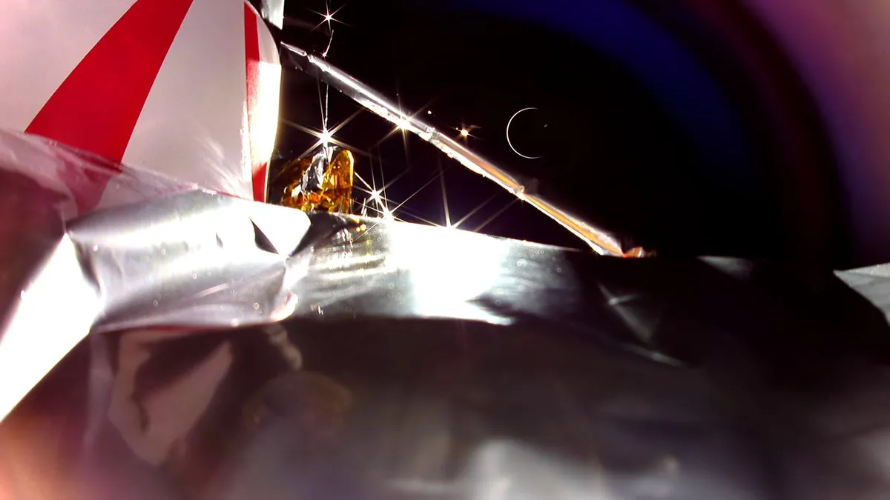

SpaceX Polaris Dawn astronauts will conduct high-flying research in Earth orbit
The Polaris Dawn crew. From left: Scott "Kidd" Poteet, Anna Menon, Sarah Gillis and Jared Isaacman. (Image credit: Polaris Program / John Kraus)

Blue Origin launching NS-26 tourist flight
Blue Origin's New Shepard vehicle launches on the NS-25 crewed suborbital mission, on May 19, 2024ocket lau (Image credit: Blue Origin)
Auroral substorm sparks stunning northern lights visible at mid-latitudes
Northern lights display viewed from Sutherland, Scotland, in the early hours of Aug. 28, 2024. (Image credit: Monika Focht)

SpaceX rocket catches fire, falls over while landing at sea
Flames bloom from the base of a SpaceX Falcon 9 rocket shortly after its touchdown on a ship at sea on Aug. 28, 2024. The booster, which had just flown its record-setting 23rd mission, toppled over shortly thereafter. (Image credit: SpaceX)

Boeing's 1st crewed Starliner to return to Earth without astronauts on Sept. 6
Boeing's Starliner space capsule is seen docked at the International Space Station. (Image credit: NASA)
TECH
08/07/24
Physicists find superconductor behavior at temperatures once thought 'impossible'
Scientists have found a key process required for superconductivity occurring at higher temperatures than previously thought. It could be a small but significant step in the search for one of the "holy grails" of physics, a superconductor that operates at room temperature.
08/08/24
Quantum data beamed alongside 'classical data' in the same fiber-optic connection for the 1st time
Scientists have successfully transmitted quantum data and conventional data through a single optical fiber for the first time.
The research demonstrates that quantum data in the form of entangled photons and conventional internet data sent as laser pulses can coexist in the same fiber-optic cable.
Most research into building a quantum internet has focused on the need for separate infrastructure or dedicated channels for quantum data to avoid interference from "classical" data. But this new "hybrid" network could pave the way for more efficient implementation of quantum communications by enabling quantum and conventional data to share the same infrastructure. The researchers revealed their findings in a study published July 26 in the journal Science Advances.
Fiber-optic cables are composed of thin strands of glass or plastic fibers that carry data as infrared light pulses. These fibers transmit data through different color channels, with each corresponding to a specific wavelength of light.
SPACEFLIGHT
10/08/24
On This Day in Space! Aug. 29, 1965: Gemini 5 breaks spaceflight duration record
The Gemini 5 mission launched on Aug. 21, 1965 atop a Titan II rocket from Cape Canaveral Air Force Station in Florida. While in orbit, the astronauts were supposed to test rendezvous capabilities and maneuvers using a pod that deployed from their spacecraft. But due to an electrical problem, they had to cancel those plans along with several science experiments.
Pete Conrad later called the mission "eight days in a garbage can," referring to the cramped quarters of the Gemini spacecraft.
08/08/24
Blue Origin's powerful New Glenn rocket to debut Oct. 13 with NASA Mars launch
The inaugural flight of Blue Origin's New Glenn heavy-lift rocket, which will send NASA's ESCAPADE mission on its way to Mars, now has a tentative launch date.
NASA announced on Monday (Aug. 26) that the mission will launch no earlier than Oct. 13. Blue Origin's first New Glenn rocket will lift off from Space Launch Complex 36 at Cape Canaveral Space Force Station in Florida, debuting at last after years of delays in its development.
An Oct. 13 launch falls within the window of opportunity for traveling to Mars, which occurs every 26 months, when Earth is properly lined up with the Red Planet to allow efficient travel.
NASA's ESCAPADE (Escape and Plasma Acceleration and Dynamics Explorers) mission consists of two probes built by Rocket Lab to study the effects of the solar wind on Mars' atmosphere. The spacecraft arrived in Florida on Aug. 18 to begin preparations for the New Glenn launch, NASA's Launch Services Program shared recently in a post on X.
"The successful delivery of the spacecraft to Kennedy Space Center marks a significant milestone and the culmination of over three years of dedicated teamwork from individuals across the project, especially our partners at Rocket Lab," Rob Lillis, ESCAPADE principal investigator and associate director for planetary science at the UC Berkeley Space Sciences Laboratory, said in a statement from Rocket Lab.
SCIENCE and ASTRONOMY
09/08/24

What is the moon phase today? Lunar phases 2024
Today, Aug. 28, 2024, the moon is 24 days old and is in the Waning Crescent phase of its lunar cycle. It is 19% illuminated.
Moon phases reveal the passage of time in the night sky. Some nights when we look up at the moon, it is full and bright; sometimes it is just a sliver of silvery light. These changes in appearance are the phases of the moon. As the moon orbits Earth, it cycles through eight distinct phases.
The four primary phases of the moon (new moon, first quarter, full moon, last quarter) occur about a week apart, with the full moon its most dazzling stage.
08/07/24

We finally know why Astrobotic's private Peregrine moon lander failed
It has been about seven months since Peregrine, a silvery lander that shot for the moon, burned up over the Pacific ocean.
The mission was an unfortunate (and quite drawn out) failure. After launching on Jan. 8, Peregrine appeared to wander in space for over a week without getting too far, eventually turning back toward Earth and ending up on our planet in pieces. Moreover, this saga was especially tense because Peregrine was very important. It carried the weight of being the first contracted mission of NASA's commercial lunar payload program, it was the selected spacecraft to fly aboard the Vulcan Centaur rocket's maiden voyage, and it dutifully held experiments, art and bitcoin meant to find their final resting places on the moon.
So, since Peregrine's demise on Jan. 18, the lander's creators at Astrobotic Technology have been working on the mission's autopsy, commissioning 34 government, industry and in-house experts for the job. And on Tuesday (Aug. 27) they finally revealed the results. In short, it seems like Peregrine had a faulty pressure helium control valve. It's called PCV2.
According to Astrobotic's post-mission report, PCV2 experienced what's known as a "loss of seal capability" most likely due to (get ready for a mouthful) "a mechanical failure caused by vibration-initiated relaxation between threaded components internal to the valve."
"Think about a screw and a washer, and a threaded component," John Horack, who chaired the mission's investigative team and review board, told reporters on Tuesday (Aug. 27). "If you shake it sufficiently, you can get some mechanical configuration that will prevent the valve from sealing."
This had repercussions — the fact that PCV2 lost its sealing capability meant the thing it was supposed to seal wasn't properly sealed. Basically, PCV2 (and its counterpart PCV1, for that matter) controlled the flow of gaseous helium between different tanks. PCV1 took care of flow between the pressurant tank and the fuel tanks while PCV2 was in charge of flow between the pressurant tank and the oxidizer tanks. Thus, with PCV2 not working, it couldn't correctly regulate the helium flow it was assigned to.
"It's pretty much no different than when your sink starts to drip in your kitchen," Horack said. "Water gets through the seal and comes out the other side, but in this case, it's helium and it's high pressure, so it's much harder to confine."